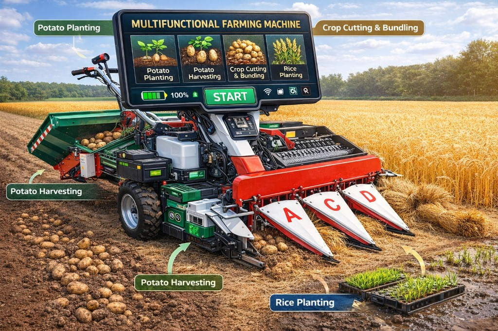

Task-First Design
Select your operation and hit START — no menus to dig through, no confusion under pressure.
A single touch-screen interface orchestrating multiple farm operations — AI-generated, precisely designed, ready for the field.

Built for real-world field conditions with a task-first, accessible interface that adapts to every operator.
Select your operation and hit START — no menus to dig through, no confusion under pressure.
Switch between Potato Planting, Harvesting, Crop Cutting & Bundling, and Rice Planting seamlessly.
High-contrast UI, massive tap targets, and simple icons readable in direct sunlight and dusty conditions.
Battery, fuel, and operational indicators always visible at a glance — no buried sub-menus.
Mode selection + confirmation flow prevents running the wrong operation in critical moments.
Track tasks, switch modes at the right time, and keep field operations consistent and productive.
Generated using advanced AI pipelines — image, video, and 3D all from a single concept brief.
1024 × 1024 · Concept Generation
MP4 · Neural Generation

PNG · 3D Generation

PNG · 3D Generation

PNG · 3D Generation
High-resolution AI-generated image — the machine in its natural field environment.
Neural image-to-video generation — the concept brought to life in motion.
AI-generated 3D render — face-on perspective of the machine chassis.
Dynamic 45° perspective showcasing the machine depth and form.
Macro view of the touch-screen dashboard and control interface.
Every design decision traces back to a real-world constraint — sunlight, dust, gloves, urgency, and the cost of a wrong button press.
View All Features